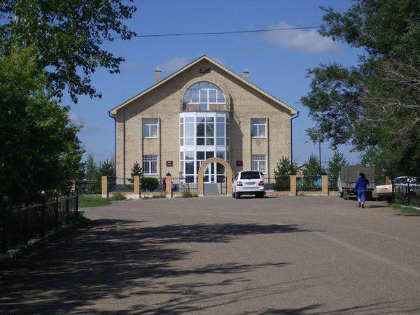

Главный офис ТОО «Шахтерское» расположен непосредственно в самом селе Шахтерском и координирует всю производственную, сбытовую и социальную деятельность этого элитного зернового хозяйства.

Главный офис ТОО «Шахтерское» расположен непосредственно в самом селе Шахтерском и координирует всю производственную, сбытовую и социальную деятельность этого элитного зернового хозяйства.
Здание администрации предприятия находится на центральной улице населенного пункта, недалеко от сельского акимата и спортивных объектов.